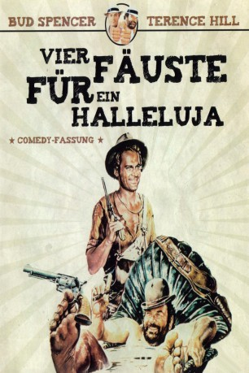
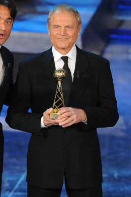
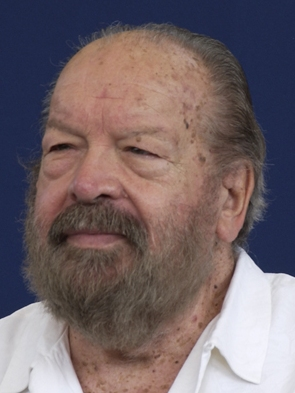
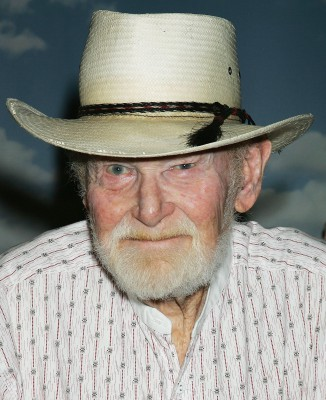
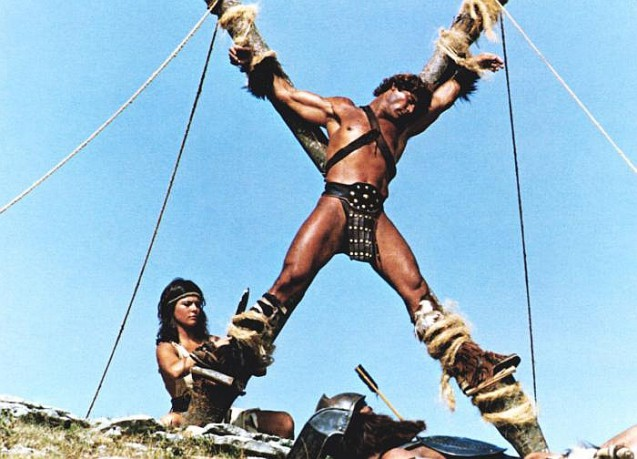
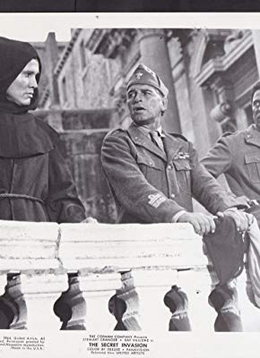
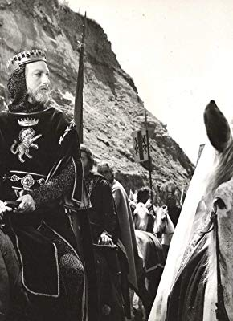

#4398 Vier Fäuste für ein Halleluja
Alternativ: Trinity Is STILL My Name! (Englischer Titel)
 
 IMDB-Wertung: 7.3 / 10
IMDB-Wertung: 7.3 / 10  Metascore: 0
Metascore: 0 
A couple of two-bit thieving brothers try and keep a promise to their dying father: stick together and become successful outlaws. Bambino reluctantly agrees to show younger Trinity the ropes, but their gentle demeanors tend to diminish their haul by repeatedly helping the selfsame family they initially held up. Fun ensues in town and at the local Spanish mission where they are taken for federal agents, mistakenly so identified by Trinity's young love interest, daughter of the aforementioned family.
Jahr: 1971
Dauer: 125 Minuten
FSK: 16
Land: Studio: Adria FilmverleihTonspuren:
Untertitel:
Auflösung: 1080p (1920x1080) Größe: 9226 MB
Genre: Komödie, Western
Regisseur: Enzo Barboni
Drehbuch: Dodie Smith
Soundtrack:
Darsteller:
-  Terence Hill als Trinità
-  Bud Spencer als Bambino
-  Harry Carey Jr. als The Father
- Jessica Dublin als 'Farrah' the Mother
-  Pietro Torrisi als Hitman , uncredited
- Yanti Somer als Perla
- Enzo Tarascio als Mitch, Sheriff
- Pupo De Luca als Prior
- Dana Ghia als Perla's Mother
- Emilio Delle Piane als Parker
-  Enzo Fiermonte als Perla's Father
- Antonio Monselesan als Wildcat Hendricks
-  Franco Ressel als Maitre D'
- Riccardo Pizzuti als Chief of the Dallas gunmen
- Benito Stefanelli als Stingary Smith
- Fortunato Arena als Parker Henchman
- Gérard Landry als Lopert
- Jean Louis als Murdock
- Luigi Bonos als Bartender Ozgur
- Gildo Di Marco als Peasant injured by monks
- Adriano Micantoni als Deputy
- Gilberto Galimberti als Poker player with eye patch
- Bruno Boschetti als
- Vittorio Fanfoni als
- Rubén Tobías als
- Roberto Alessandri als Hitman , uncredited
- Antonio Anelli als Man sitting in noble saloon , uncredited
- Artemio Antonini als Lenny Smith , uncredited
- Giancarlo Bastianoni als Hitman , uncredited
- Franco Beltramme als Hitman at Mission , uncredited
- Angelo Boscariol als Man in Saloon , uncredited
- Giulio Bottoni als Man in Restaurant , uncredited
 Omero Capanna als Monk , uncredited
Omero Capanna als Monk , uncredited- Angelo Casadei als Saloon waiter , uncredited
- Tony Casale als Mexican , uncredited
- Lella Cattaneo als Woman in Restaurant , uncredited
- Nestore Cavaricci als Townsman , uncredited
- Enrico Chiappafreddo als Badman , uncredited
- Dante Cleri als Horseman , uncredited
- Franz Colangeli als Man in Restaurant , uncredited
- Franco Daddi als Parker Henchman , uncredited
- Antonio Danesi als Stagecoach Driver , uncredited
- Arnaldo Dell'Acqua als Hitman , uncredited
- Roberto Dell'Acqua als Hitman , uncredited
- Mario Dionisi als Bandit , uncredited
- Paolo Figlia als Hitman , uncredited
- Lorenzo Fineschi als Monk , uncredited
 Lina Franchi als Townswoman , uncredited
Lina Franchi als Townswoman , uncredited- Augusto Funari als Hitman at Mission , uncredited
- Ettore Geri als Man in Restaurant , uncredited
Datei: X:\Person\Bud Spencer + Terence Hill\Vier Fäuste für ein Halleluja (1971, FSK16, 1920x1080).mkv seit 13.09.2016
Festplatte: HD Collection-7+mehr(A-Z)+Person
 Es gibt insgesamt 43 Filme in der Gruppe 'Person\Bud Spencer + Terence Hill'
Es gibt insgesamt 43 Filme in der Gruppe 'Person\Bud Spencer + Terence Hill'